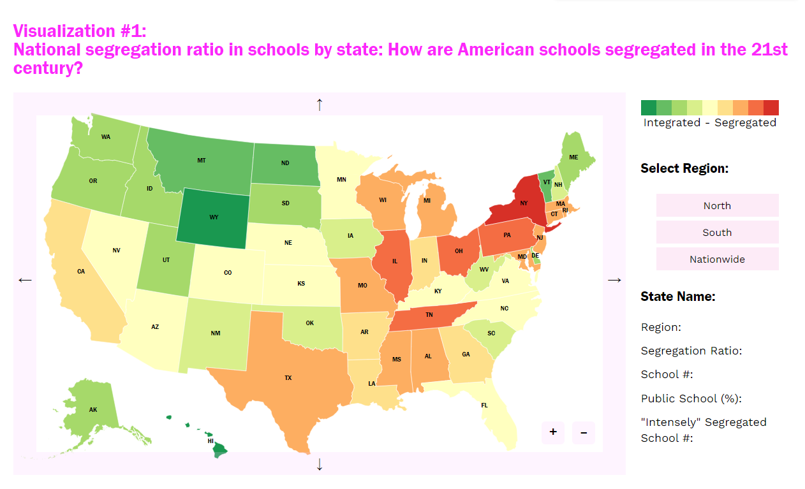

Visualization #1
Learning objectives
Cognitive objectives:
- The viewer will identify geographical school segregation in America.
- The viewer will infer how education is segregated among different regions and states.
- The viewer will critique the liberal or conservative stereotypes they are holding about regions and states.
- The viewer will compare school segregation degree within a state to the quartile value in America.
Affective objectives:
- The viewer will perceive the critical situation of school segregation in America.
- The viewer will attend to the critical situation of school segregation in some liberal states, such as D.C. and New York.
- The viewer will assess the educational liberty in the North and the South.
Design process
Initial sketch
The reason why I chose to design this visualization is that the author mentioned in the article about nationwide school segregation and also wrote “In many cases, Clark said, black children (in NYC) were attending schools that were worse than those attended by their black counterparts in the South”. Thus, I’m curious about how educational segregation varies around the country and whether the “liberal” North does better than the “conservative” South in integration.
My initial sketch is inspired by Week 15: Ranking the States by Fiscal Condition. I learned the way they make the interactive map and include top 5 and bottom 5 states in their visualization sidebar. I drew this simple and rough sketch on my iPad and tried to stick to it during the implementing process.
I also looked through the dataset this course provides, and it seems that NCES_private_clean.csv and NCES_public_clean.csv are enough for this visualization. One thing I need to improve in my sketch is to simultaneously show integration and geographical or political groupings (in terms of north vs south). As I already used colors to denote the segregation ratio, I need to figure out another channel to achieve this goal.
Manipulating the data
The only two datasets I used in this visualization are NCES_private_clean.csv and NCES_public_clean.csv. I used pandas to clean and manipulate them to get the data I need: segregation ratio, total school number, public school proportion, "intensely" segregated school number. The reason why I use "intensely" segregated school numbers rather than the proportion are that I think every "intensely" segregated school matters for students in that school.
In the data cleaning process, at first, I just removed all the rows that are not complete (contain NaN values in selected columns). However, I found that as for the public school dataset, all the schools in New York are removed. After taking a closer look at the data, I found that all New York schools do not have data for Nat. Hawaiian or Other Pacific Isl. Students, so in my former cleaning process, they were all removed. I manually added 0 to that column for all the schools in New York, and redid the data cleaning process.
One challenge I faced here is how to calculate the segregation ratio for a state. Although the author mentioned one calculation method in the article which is the share of "intensely" segregated schools in the statewide school system, I searched for more scientific and official measurements. I adopted the measurement formula from this article: When Is a School Segregated? Making Sense of Segregation 65 Years after Brown v. Board of Education, and made some modifications.
The initial formula in this article is:
I removed the p_i in the numerator and the P in the denominator and added an N in the denominator. The reason why I did this is that I think it is the school rather than the individual that really matters in the segregated education system. Because for single Black or Hispanic student, it is almost impossible to change their school to achieve such education integration.
The final formula I used is:  .
.
I calculated the data using pandas, and here is the data structure I used in the visualization:
Design iteration
As I was planning to create a highly interactive and customized dashboard for this visualization, I chose d3.js rather than altair as the tool. I adopted the COVID-19 spread map I created when I was learning d3.js last winter break, and changed the projection from the world to the U.S.
This visualization is also an inspiration for me to split different geographical groups: if I click the "Asia" button, the map will zoom in to this region and set every other country to be grey. In this way, I can achieve both integration and segregation goals. Here is the initial exploration of the visualization using d3.js:
I acquired the region information from these two websites: https://www.britannica.com/place/the-North, https://www.britannica.com/place/the-South-region.
Then I deployed this visualization in my portfolio and created a layout that is similar to my sketch. One thing I changed in this version is that I added segregation ratio to the sidebar statistics, since I found the audience can't learn this value through the map, and it's necessary to provide it as a reference.
I polished this visualization in the following ways:
- I moved the region selection buttons under the state statistics: although the segregation degree of different regions is one thing I hope the audience would pay attention to, the statistics are more important and should be seen by the audience right after they click a state.
- I added small colored arrows next to the statistics to show how much it deviates from the quartiles.
Then I composed the header to make it looks exactly like what I drew in the sketch. I also added the segregation ratio here to help the audience with comparison.
Finally, I preferred to show the segregation ratio as raw data rather than rankings, and added a footnote to explain the calculation process to eliminate confusion.
Aesthetic considerations
The color scheme I used in this visualization is from ColorBrewer's RdYlGn scheme. Although this scheme is not accessible for people who are color blind, the comparison between red and green compared to red and blue provides a sense of integration and segregation here. As for the sidebar statistics, I marked the segregation ratio with a conspicuous pink color to attract the audience's attention.
Qualitative self-evaluation
Encoding
I encoded the segregation ratio using different colors with the red-green scheme in the map, and provided a legend next to the graph. It works well because red color always denotes serious situations, and green color somehow means harmony and safe. One of the shortcomings in the graph is that the sizes of states may influence the understanding of the severity of school segregation.
I also encoded different colors to differentiate among regions and to indicate whether the sidebar value of a state is above/below the quartile. However, I found that there are too many categories and colors on the visualization, which may cut down the effectiveness of color encoding and cause confusion for the audience.
Expressiveness
The description of the visualization I provided at the beginning gives an overview of what the audience is supposed to see in the graph. I also add two lists of the most segregated and integrated states next to the description, which serves as a summary and preview of the complicated encoded map. I made the map to be interactive, so the audience can click a certain state that they are interested in to view the details of its statistics. Besides, I added up and down arrows for each sidebar statistic to indicate how drastically it is beyond the quartile. Even the value itself makes little sense of what it means, creating comparisons among states.
Two tricky considerations in the visualization are the separation of regions and how to evaluate the segregation ratio. As for the former, I added three buttons at the end of the sidebar to help the audience navigate the map. On clicking the corresponding button, the map will automatically zoom in to the selected region and change the color of other states into grey. As for the latter, I considered changing the value of the segregation ratio into rankings, but it will eliminate the accuracy and transparency of the visualization. Instead, I added a footnote to illustrate the calculation process of this ratio and what it means to help with the audience's understanding.
One of the shortcomings here is that the audience cannot conduct comparisons among certain states, nor can they learn about the school segregation degree in different regions statistically. The improvement could be to add a multi-check box in the visualization to enable simultaneous comparison between states. And this visualization can also be improved by providing a summarized dashboard in the form of a bar chart for users to gather and analyze information.
Accessibility
This visualization is not very accessible, here are some of the reasons:
- The color is the only encoding of segregation ratio in the map, which is not friendly for people who use screen readers and who are color-blind.
- The color scheme I used here is the red-green scheme, which is definitely not accessible for people who have red-green color blindness.
- To enable interactive operations, I removed the title for every svg element in the visualization, which makes it inaccessible for screen reader users.
- Besides, this visualization cannot be operated using keyboards.
Formal evaluation methodology
Theoretical construct: effectiveness
Variable: comparability (the segregation degree between regions and states)
Measurement: bias, variance, time spent, confidence degree in trials
Evaluation: controlled experiments
- Recruit 40-80 participants.
- Ask the participants to explore the visualization to answer a basic question, record the bias, variance, time spent, and confidence degree as reference for formal experiment.
- Set up 3-5 experiment tasks about comparison.
- Ask the participants to explore the visualization to answer one question, record the bias, variance, time spent, and confidence degree, and then provide the next question...
- Change the order of questions for groups of participants.
In addition, I'm also curious about what kind of color encoding in the map is most effective. In this case, the variables are the color schemes, count of colors in the map, etc. The evaluation I'm carrying out is a comparative study among different color encoding settings. I can also refer to literature to learn about color encoding effectiveness in maps.
Visualization #2
Learning objectives
Cognitive objectives:
- The viewer will recognize school segregation in China influenced by residential inequity.
- The viewer will interpret how teaching quality (measured by staff-student ratio) differentiates between urban and rural areas.
Affective objectives:
- The viewer will perceive the how the hukou system restricts the integration of education in China.
- The viewer will focus on the historical reason of school segregation in China and its possible solutions.
Design process
Initial sketch
The reason why I include this visualization as a sidebar visualization in the article is that the proposal the author mentioned that “All things being equal, with no history of discrimination, it might well be desirable to assign pupils to schools nearest their homes” is what is carried out in China now. The insight I intend to communicate in this graph is how geographical segregation impacts educational segregation in Beijing and possibly provokes global thinking about this topic.
My initial sketch is inspired by Berlin Airbnb Ratings. I intended to create an aesthetic visualization based on an abstract map of Beijing to illustrate the school segregation in urban and rural areas. I combined a line chart with a 1/4 circle composed of hand-drawn graphs.
As the number of data points in this visualization is quite small, there are a lot of ways to design such a visualization. I created this red and blue visualization as a rough reference for my design iteration.
Manipulating the data
The data I used in this visualization is Beijing Open Data Platform: Basic Information on Kindergartens (2017).
In the beginning, I tried to obtain more adequate data from the Beijing Open Data Platform. However, I found that all the data on this government site cannot be downloaded by individuals or individual scholars unless they are authenticated by an authorized institution. I can only preview a small number of data and hand-code them into data structures. I also tried to find data published by authoritative research institutions, but most of them didn't provide raw data of their research and the data sources are unclear to the audience. Therefore, I decided to use this small but reliable data to continue my visualization.
I used pandas to manipulate the data and calculated the staff-student ratio.
Design iteration
I drew the initial line charts with Altair and then iterate and decorate them with Microsoft PowerPoint, Adobe Photoshop, and Adobe Illustrator.
Here is the line chart I drew using Altair. I eliminated all the boundaries and axes and planned to recreate them using graphic design tools.
Here are the screenshots of some of my design iterations:
I added the labels and axes using Microsoft PowerPoint and added background images I obtained from Pinterest. Here are the sources: city image, township image, village sources. At first, I thought the hand-drawn style best suits the background style. However, the rough lines and handwritten texts somehow influenced the clearness of the visualization. Therefore, I decided to use the one in a neat style.
You may notice that I didn't stick to the red and blue style I created in the design sketch, because I was kind of obsessed with the colorful background pictures. After struggling for a while, I decided that I should eliminate the different colors in the background, since they didn't convey any information and were very distracting in this graph. But as they do provide some context for the visualization, I kept them in future iterations.
Here are the two first versions of this visualization:
I made a mistake when I was creating the second graph: I mixed the labels up between these two lines. So I changed the intertwined labeling style I used in the past iterations and made the labels for each line on the single side.
There are still some problems with this version: the background images are still very distracting, the colors I used in the line chart are similar which may induce misunderstandings, and is not accessible to people who are color blind. Also, mixing these two lines in the same line chart makes little sense here, because they have different y-axes and the closeness doesn't mean the values are similar.
To gain some inspiration, I explored Pudding.cool and found this post about lighting cost in history. I found that as they also used a very small dataset, they creatively created the visualization to give an impressive understanding of the data. This reminds me of a similar and wide-used format of data visualization which can also be applied to my project, here is an example: The difference between the United Kingdom, Great Britain, and England.
I created a simple second sketch based on this new style:
I also decided to create some contrast between education quality in urban and rural areas, so I set the staff-student ratio in the city as a baseline and encoded colors for the increased number of pupils in the township and village. I kept the line charts and background images but separated them to make the graph clearer.
Here is the final version of my visualization:
As for the visualization of the number of kindergartens and pupils in Beijing, my first iteration is to add categories to the raw number in my sketch to give a better sense of both the influence of educational segregation and the current situation.

The 6 big numbers here might be a bit overwhelming for the audience. I used Altair to create a bar chart to help illustrate these numbers.
The first version I created for this visualization is below:
However, there are some shortcomings:
- The numbers are encoded in two channels: length and color density.
- The number of kindergartens and the number of pupils are encoded in the same color, which may confuse the audience.
I re-organized the encoding of these two bar charts. My modifications are:
- I removed the color density channel in a single bar chart, therefore, the number is only denoted by the length of the bar.
- I changed the two bar charts into different colors which indicates that they belong to different categories.
Here is the final version of this visualization:
Aesthetic considerations
I created the creative bar charts using Adobe Illustrator to duplicate the image of a person. In this way, the decimals are not accurately measured in the visualization. I added the edited cartoon images of the city/township/village in the visualization to make it looks artistic enough for a sidebar in the magazine.
Qualitative self-evaluation
Encoding
As for kindergarten and pupil numbers, I used two different colored bar charts to encode them. Compared to raw numbers, bar charts make the comparison stronger. And as for teacher/doctor-student ratios, I used a line chart to illustrate the trends among the city, the township, and the village. I also added a creative bar chart under the line chart to give a clearer sense of the number of students for each teacher/doctor. One tricky design consideration here is the color encoding. As for the teacher/doctor ratio, although they are nominal variables and are supposed to be encoded with very different colors, I feel like they are all about the staff-student ratio and try to create slight differences by changing the density of the color.
Expressiveness
One effective design in this visualization is the creative bar charts and the use of contrast in them. Compared to traditional bar charts, these create bar charts composed of the shapes of pupil might add to the expressiveness and impressiveness of the figure. Also, I set the bar for pupil number in the city to be grey, and set extra pupils in the township and village to a different color. In this way, the visualization provides good contrast between urban and rural education quality and helps illustrate school segregation effectively.
Accessibility
As I deployed all the visualizations as images in this section, I added extra alt texts to help people who are visually impaired read the visualization.
Formal evaluation methodology
Theoretical construct: impressiveness
Variable: subjectively provoked emotion
Measurement: enjoyable, impressive, striking, recall ratio
Evaluation: subjective assessments
- recruit 15-25 participants
- ask the participants to explore the visualization
- set up 3-5 experiment tasks about comparison
- ask the participants to fill out an analysis sheet measuring their emotion after viewing the visualization
- ask the participants to fill out the same sheet again after 4 hours (need change) again to test the recall ratio
I also created a simple alternative line chart for this visualization. For measuring impressiveness, we can also conduct a comparative study between these two visualizations.